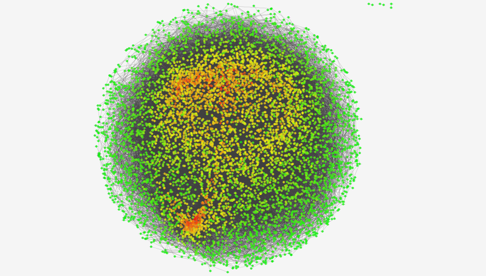
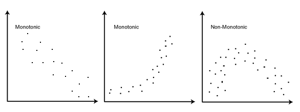
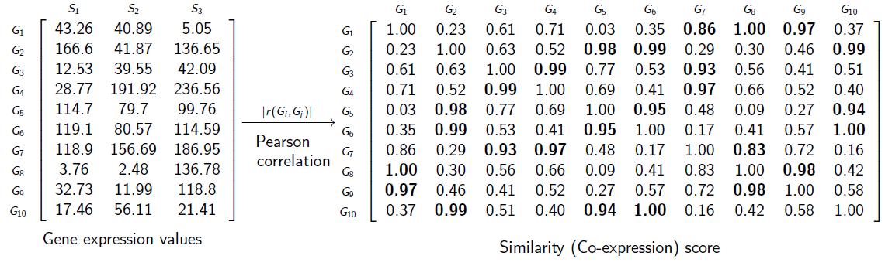
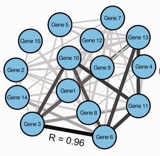
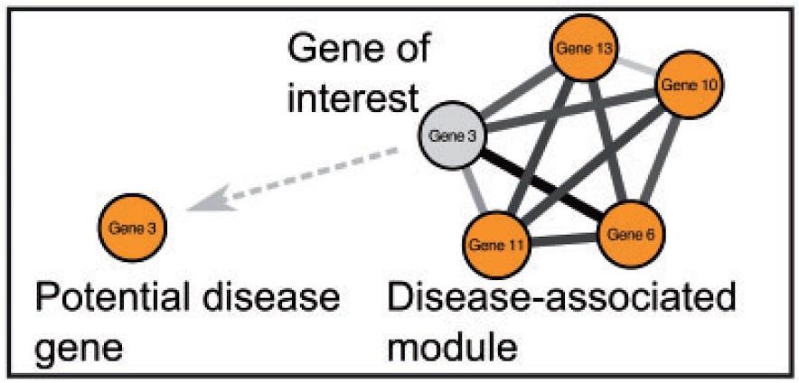

08
Rede de co-expressão
Rede de co-expressão
É uma rede de genes que possuem a tendência de serem co-expressos (ativados ou reprimidos) através de um grupo de amostras.
Redes de co-expressão (cont.)
São grafos não-direcionados.
- Vértices: genes.
- Arestas: relação de co-expressão.

Redes de co-expressão (cont.)
- Para construir redes de co-expressão, precisamos de várias amostras.
- Para quê?
Redes de co-expressão (cont.)
- Uma rede de co-expressão gênica pode ser construída procurando pares de genes que mostram:
- Padrão de expressão similar entre amostras
- Dois genes co-expressos podem subir ou descer juntos em amostras.
- Padrão de expressão similar entre amostras
Redes de co-expressão (cont.)
Podem ser usadas para:
- Priorização de genes associados a doenças;
- Anotação funcional de genes;
- Identificação de correlação;
Normalmente não são capazes de:
- Conferir informação sobre causalidade;
- Genes podem estar ativos durante uma resposta biológica mas não necessariamente com efeito causativo entre o gene e a resposta.
- Não fazem diferença entre genes regulatórios e genes regulados;
Construção de redes de co-expressão
É feita em três passos:
- Definir relações entre os genes.
- Construir a rede.
- Definição de módulos.
Passo 1: Definir relações entre genes
- As relações entre os genes são baseadas nas medidas de correlação .
- As medidas de correlação fazem a comparação do padrão de um par de genes através das amostras.
- Existem várias medidas de correlação:
- Correlação de Pearson.
- Correlação de Spearman.
Correlação de Pearson
É uma medida da correlação linear entre duas variáveis X e Y .
O coeficiente de correlação de Pearson é a covariância das duas variáveis dividida pelo produto de seus desvios-padrão.
\(\huge \displaystyle \rho_{X,Y} = \frac{\text{Cov}(X,Y)}{\sigma_X \sigma_Y}\)
| Símbolo | O que é | Significado |
|---|---|---|
| \(\rho_{X,Y}\) | \(\rho\). | Coeficiente de correlação de Pearson |
| \(\text{Cov}(X,Y)\) | Covariância entre X e Y. | Mede como as duas variáveis variam juntas. |
| \(\sigma_X\) | Desvio padrão da variável X | Dispersão de X em torno da média |
| \(\sigma_Y\) | Desvio padrão da variável Y | Dispersão de Y em torno da média |
Uma relação é linear quando a mudança em uma variável é associada a uma mudança proporcional na outra variável. http://lcb.fflch.usp.br/sites/lcb.fflch.usp.br/files/upload/paginas/AULA5-correla%C3%A7%C3%A3o_0.pdf
Correlação de Spearman
- Vê a correlação entre duas variáveis.
- A relação entre as variáveis é monotônica, sejam lineares ou não, o que é menos restritivo que uma relação como seria com a correlação de Pearson.
- Se elas crescem ou diminuim juntas.

Em uma relação monotônica, as variáveis tendem a mudar juntas mas não necessariamente a uma taxa constante. https://support.minitab.com/pt-br/minitab/18/help-and-how-to/statistics/basic-statistics/supporting-topics/correlation-and-covariance/a-comparison-of-the-pearson-and-spearman-correlation-methods/

Passo 2: Construir a rede
As associações de co-expressão são usadas para reconstruir a rede. Vértices são genes e arestas são a presença da correlação (além da presença podem refletir a força da correlação).

Tipos de redes de co-expressão
Redes com sinal e sem sinal.
Redes ponderadas e não-ponderadas
Redes de co-expressão com sinal e sem sinal
Numa rede de co-expressão baseada em correlação, às medidas de correlação têm valores entre:
-1: correlação negativa perfeita
1: correlação positiva perfeita.
- Em uma rede sem sinal , os absolutos dos valores de correlação são usados. Então teremos somente a informação de correlação mas não saberemos se são positiviamente ou negativamente co-expressos.
- Mas teremos a relação de crescem juntos, decrescem juntos ou aumentam e diminuem ao mesmo tempo na mesma proporção.
Redes de co-expressão com sinal e sem sinal (cont.)
Uma rede com sinal resolve esse problema escalonando os valores de correlação entre 0 e 1.
<0,5: indicam correlação negativa
=0,5: neutra/fraca
>0,5: indicam correlação positiva.
- Assim, um valor escalonado próximo de 0 indica uma correlação forte e negativa, uma característica que pode ser particularmente interessante quando o transcrito exerce sua função principalmente através da regulação negativa de outros genes.
- Na rede com sinal só teremos relações de crescem ou diminuim juntos.
https://peterlangfelder.com/2018/11/25/signed-or-unsigned-which-network-type-is-preferable/ https://peterlangfelder.com/2019/05/30/signed-network-from-signed-topological-overlap/ https://peterlangfelder.com/2018/11/25/trashed/
Redes de co-expressão com peso e sem peso
- Em uma rede ponderada:
- todos os genes são conectados uns aos outros
- conexões têm valores de peso contínuos entre 0 e 1 que indicam a força de co-regulação entre os genes.
- Em uma rede não-ponderada:
- a interação entre pares de genes é binária, ou seja, 0 ou 1, não-conectados e conectados, respectivamente.
- Uma rede não-ponderada pode ser criada a partir de uma rede ponderada: considerando acima de um certo limiar de correlação a ser conectado e todos os outros desconectados.

van Dam S, Võsa U, van der Graaf A, Franke L, de Magalhães JP. (2017) Gene co-expression analysis for functional classification and gene-disease predictions. Brief Bioinform
Passo 3: Definição de módulos
- Módulos de genes co-expressos são identificados usando técnicas de agrupamento (clusterização).
- O agrupamento é usado para fazer grupos de genes com padrões de expressão similares entre as amostras.
- Os módulos podem ser subsequentemente interpretados por Análise de Enriquecimento Funcional.
- Um método que identifica e ranqueia categorias funcionais super representadas em uma lista de genes.
Passo 3: Definição de módulos (cont.)
É importante considerar a heterogeneidade das amostras.
Análises de co-expressão enfrentam um troca: redes multitecido/multicondição diluem o sinal e escondem módulos específicos, enquanto redes de tecido/condição única reduzem o tamanho da amostra e perdem poder estatístico para detectar módulos compartilhados.
Solução:
- Métodos gerais (sem distinção): ideais para identificar módulos de co-expressão comuns/compartilhados.
- Co-expressão diferencial (comparativa): ideal para identificar módulos específicos/exclusivos.
Identificando módulos
O pacote de clustering mais usado para a análise de redes co-expressão é o Análise Ponderada de Rede de Correlação de Genes (WGCNA, Weighted Gene Co-expression Network Analysis).
Essa ferramenta fácil de usar constrói módulos de co-expressão usando o agrupamento hierárquico em uma rede de correlação criada a partir de dados de expressão.
O agrupamento em clusters hierárquicos divide iterativamente cada cluster em subclusters para criar uma árvore com ramificações representando módulos de co-expressão. Os módulos são definidos cortando os ramos a uma certa altura (valor de corte) definida pelo usuário.

El-Sharkawy, Islam & Liang, Dong & Xu, Kenong. (2015). Transcriptome analysis of an apple (Malus × domestica) yellow fruit somatic mutation identifies a gene network module highly associated with anthocyanin and epigenetic regulation. Journal of Experimental Botany. 66. 10.1093/jxb/erv433.

Redes de co-expressão diferencial
Além da Co-Expressão Tradicional: Análise Diferencial de Redes
O que faz: Mapeia genes que alteram dinamicamente seus parceiros de co-expressão conforme a condição (tecidos, doenças ou estágios de desenvolvimento).
Importância Biológica: Genes com conexões flexíveis têm maior potencial regulatório e são chaves para explicar diferenças fenotípicas.
Validação Multi-Ômica: O papel regulatório desses genes é investigado integrando:
- Interações Proteína-Proteína (PPI)
- Perfil de Metilação do DNA (Metiloma)
- Redes Regulatórias de Fatores de Transcrição (TF-alvo)
Identificando hubs
Priorização e Papel dos Genes Hub em Redes de Co-Expressão
Desafio: Módulos de clustering costumam ser extensos, exigindo a identificação dos genes que melhor explicam o comportamento do grupo.
Solução: Identificação de genes hub — nós altamente conectados e biologicamente mais relevantes para a topologia da rede.
Classificação Topológica:
- Hubs Intramodulares: exercem centralidade dentro de um módulo específico.
- Hubs Intermodulares: atuam como pontes e reguladores globais entre diferentes módulos da rede.
São usadas medidas de centralidade para identificar os hubs.

Análise de enriquecimento
- Dentro de um módulo são encontrados os termos funcionais mais frequentes.
- Assim pode se ter uma ideia de qual função, dentro de um módulo na rede, pode ser mais frequente e representativa daquele módulo.
Predição de culpados por associação
Significado Biológico e o Princípio GBA
Enriquecimento Funcional: Principal método para traduzir uma lista de genes em uma função biológica compreensível (o “papel” do módulo).
Princípio GBA (Guilt by Association / “Culpado por Associação”): Premissa de que genes co-expressos participam do mesmo processo biológico.
Anotação Funcional: Permite inferir a função de genes desconhecidos (mal anotados) com base nos genes bem conhecidos do mesmo grupo.
Aplicações Clínicas: Identifica novos genes candidatos para doenças se o módulo como um todo apresentar forte ligação com uma patologia.

Ferramentas
Pré-processamento: WGCNA para construção da rede
Identificação de módulos: WGCNA ou clusterMaker2 (Cytoscape)
Análise de hubs: CytoHubba ou igraph
Enriquecimento funcional: clusterProfiler ou g:Profiler
Visualização final: Cytoscape ou ggplot2/ggraph